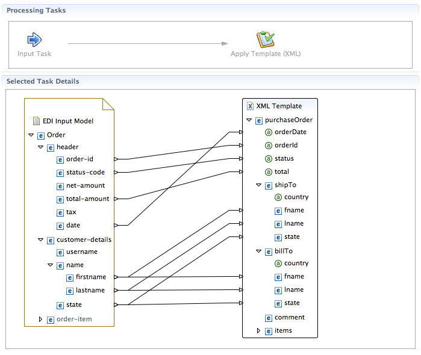

| Direct Source to Target Templating |
Added support for transforming directly from a source message (XML, EDI, Java, CSV etc) to a target (XML or CSV)
without requiring an intermediate Java Mapping Model.

The last version of this plugin required an intermediate Java Mapping Model in situations
where the user simply wanted to apply a templating transformation e.g. XML-A to XML-B. This
is no longer a requirement. The user can now apply a template drectly to the input data
model.
|